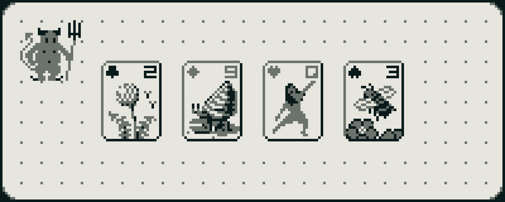

#2023-02-05: Unlost
Reflections on Loss, Work, Super Patience, and My Aspirations for the Year.We're a month into 2023 and I've been wanting to write for a long while.
#So Long, Fritz
Our family cat of many years has died. Fritz was my constant companion since 2012. His lifelong health problems were a great burden, but his disposition was as warm and gentle as sunlight.
It's been hard to get over the loss of my small friend. He was such an inseparable part of my days for so long. He was just always there. Now, I'm still here in the same place and he's not. I cycle back around on everyday going-ons where last time through he was still here. All his empty little beds scattered about the house the day after.
The choice to deliberately end his life was hard to make. My partner spent most of the night before with him. Despite best efforts, he wasn't eating. On his last day, he stopped drinking.
The appointment was in the early evening. It was a sunny day. I opened the blinds for Fritz in the morning. I kept watching the sun roll down the sky, knowing that it was his last day. I saw the sun setting as he received the injection. It seemed to be painless, and we were there, and then he wasn't. I ran my fingers through his beautiful, soft, cream-orange fur for the very last time. I felt the lovely pink pads of his paw grow cool. His tiny head was slumped and defeated, and finally, I carried his small, crumpled body away. A body I had carried so many, many times before, for he loved to be held and to be carried.
So long, Fritzy. I miss you heaps.
#Work
My professional life has been as busy as ever. The pressure to perform has always been high but, in the last couple months, it feels like an altogether different place than the one I joined just 11 months ago. JIRA-enforced, broken Agile has drained most of the joy I took in hacking. I actually enjoy planning (look at my history on Wikimedia's Phabricator) but this isn't it. I was a top team contributor but now I feel like an old worn shoe. 2023 will be my fight to make the culture one worth being in. Perhaps this will pass and work will become as it once was and we can do cool stuff great again. We have all the right ingredients.
#Easy Built
My parents finally sold their model airplane business, Easy Built Models. The business goes back to 1932 but they bought it when I was 12. My biggest contribution was probably the website which I built while learning HTML and CSS as a kid. My mom took the site over and maintained it for the last 20 years.
All of family has become quite distant. My grandfather warned me many times to never let my relationship with my parents tarnish as they would be the best friends I would ever have.
#Super Patience
 Select cards on Pixel Joint.
{kind=link}
Super Patience is my modest pixelated solitaire clone formerly titled Sublime Solitaire (turns out there is an old Mac game by this name) and before that Sawfish Solitaire. A bit impromptu, I decided to publish Super Patience the day before Fritz died. I cut back the number of illustrations and compromised on what remained to get it out the door and move on.
When I finally released Linear Text, I felt so empty afterwards. I think I over-compromised on what was most important to me. For Super Patience, I've felt mostly at peace to have made it even though it's definitely not what I wanted it to be. Some user-visible shortcomings that come to mind:
- I wish the illustrations were much finer. There's a couple I'm really pleased about but many feel quite rough and yucky.
- I wish the colors were a lot better and the sizing larger. I dig the weird breadboard / electronic paper / LCD vibes but this game hurts my eyes.
- I wish every illustration was unique. One of the biggest compromises I made was to duplicate art across suits for many cards.
- I wish the save state was friendlier, retaining every move, and that win state was recorded on final card placement, not game reset. Also, I wish an offline installation was supported.
- I wish the UI was a little better. I don't like that Patience the Demon is a button.
- I wish winning felt a little more eventful. At least three folks have expressed disappointment about this. While I don't want anything too distracting, I think there should be something a little more. Windows solitaire has a big animation which feels too grand to me and Dig-Dug grew a flower each level. Somewhere between there.
- I wish I felt more confident about the pseudorandom number generator. Super Patience implements a well-known simple PRNG and has quite a few unit tests wrapped around it to verify it's working correctly. Even so, any time I sense any deja vu, I doubt it. Now I'm too afraid to change it to the system implementation.
- I wish it felt a little more special. I'm not sure what exactly, but I wish I had tuned the game to be a little more enjoyably unique. One super player suggested dealing only winnable games. This is so interesting to think about because infinite playthroughs of the stock are allowed but impossible-to-win states are still quite possible. I wonder what an only winnable deals version would feel like.
The pixelated effect feels like what I had hoped it would be though. That's a been a driving goal since before Nature Elsewhere and one that's been way harder to achieve than I thought it would.
I have no idea how few people are playing Super Patience. I've shared it quite a few places though:
- Read.cv
- Pixel Joint
- Subreply
- rest notes
- Gamedev.js Weekly Newsletter
- A local game development group, as well as some high school and college friends. I even shared it with the creator of Deno (as we had previously discussed it).
A couple old friends, some from happier days years ago, updooted my post on Twitter which was so nice to see. I hope they liked it.
I've had the warmest response so far from the Read.cv community which even featured the game in their weekly newsletter. I saw that one player has somehow racked up nearly a hundred wins which simultaneously delights me and makes me realize I didn't put nearly enough polish into the game at all. I made a small tweak to increase the wins supported for this player should they keep playing but I hope they quit soon.
#Nature Elsewhere and 2023
If there's been one feeling I've frequently had in the last six years or so, it's feeling totally lost. It's quite lonely trying to make a game and an engine. I learned a ton building Super Patience and I'm beginning to realize that I no longer feel lost.
I have essentially been iterating on the underlying engine, void, since Super Patience's release and have since even made a tiny bug-squishing demo on it.
Now, with two examples to work with, I can see the impact of changes on the engine more practically. I've really been enjoying improving the APIs and trying to reduce game-level boilerplate. There's a lot left to do.
Super Patience started as an attempt to work back towards development of my old in-progress game, Nature Elsewhere. I'm giving up on NE for the forseeable future.
I don't want to work on big personal projects in 2023. Here are my priorities as of writing:
- Roll with the punches at work. Stay positive. Make the work what I want it to be.
- Lose some weight.
- Keep iterating void with tiny demos that are fast to make and play.
- A few high-priority home improvements, get a couch.
- Vacation somewhere other than home.
My priorities will shift radically if work falls through but I can't plan for that except to plan to do my best.
I hope to also work my way back to Linear Text which I have been pining to return to for months but I just don't see where it fits. It's a big project and very different than void. Iterating void has really helped consolidate and publish some of my past work and I want to keep doing that for a while until I have fewer loose ends. I've been trying really hard to do just one thing at a time in my personal work and that's really helped me make progress, even on late nights when I'm exhausted from work, albeit very slowly.
My partner and I haven't really gone many places since the pandemic started. We haven't eaten indoors at a restaurant in the last three years. I hope we can get out some more this year than in the past few.
I like my priorities this year. I think void will make some modest but nice progress, and that I'll be a little more organized and better poised for more ambitious projects. I feel grateful to be and excited by the possibilities for the year ahead.